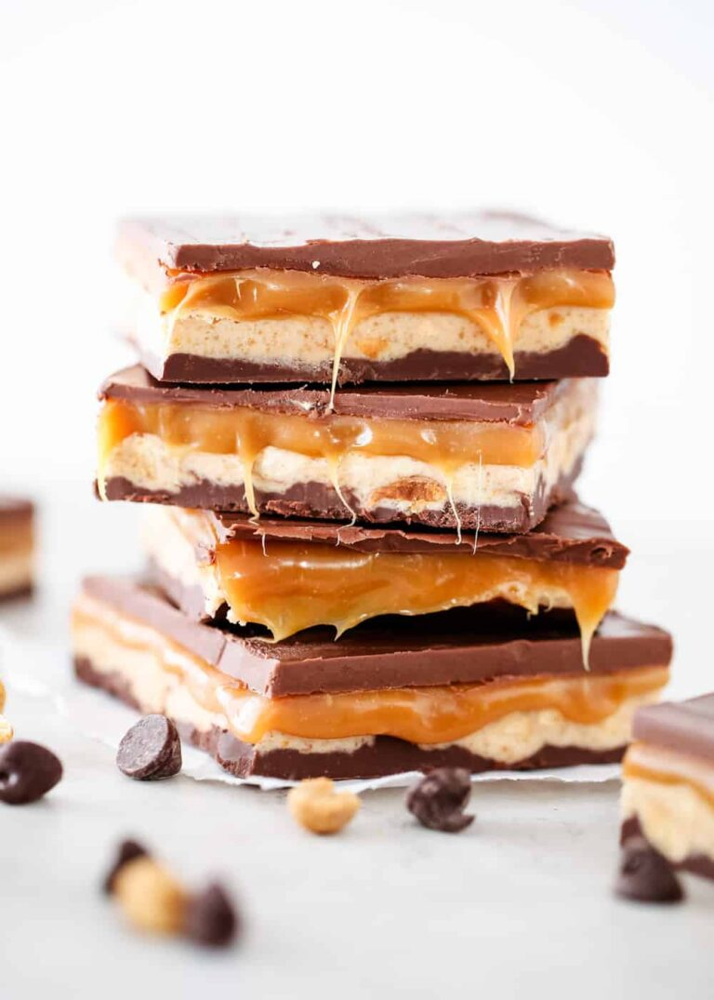

Homemade Snkickers

Description
Delicious homemade snickers bars filled with layers of chocolate, nougat and caramel. This easy no-bake treat will become one of your absolute favorites!
Ingredients
-
Layer 1:
- 1 1/2 cups milk chocolate chips
- 1/4 cup creamy peanut butter
-
Layer 2:
- 1/4 cup unsalted butter
- 1 cup granulated sugar
- 7 ounce jar marshmallow fluff
- 1/4 cup creamy peanut butter
- 1/4 cup evaporated milk
- 1 teaspoon vanilla extract
- 1 cup salted peanuts , roughly chopped
-
Layer 3:
- 14 ounce bag of caramels
- 1/4 cup whipping cream
-
Layer 4:
- 1 1/4 cups milk chocolate chips
- 1/4 cup creamy peanut butter
Steps
- Line a 9×13" pan with foil and spray with non-stick cooking spray.
- Start with ingredients for layer #1. Melt chocolate chips and peanut butter in a microwavable bowl on 50% power. Cook for 1 minute and then stir. Cook in 30 second increments until melted.
- Pour chocolate into the pan and spread out evenly. Place in the refrigerator for 20 minutes to harden.
- Gather ingredients for layer #2, then melt butter in a medium-sized pan over medium-heat. Add in sugar and milk, stirring until it has dissolved. Bring to a boil and let cook for 5 minutes, stirring occasionally. Then add in marshmallow fluff, peanut butter and vanilla and stir until smooth. Remove pan from heat and fold in peanuts and then spread the nougat filling on top of the chocolate layer. Allow to cool completely.
- Gather ingredients for layer #3 in a small saucepan. Cook caramel and whipped cream over low heat for about 10-15 minutes (or until smooth), stirring occasionally. Pour over nougat layer and allow to cool completely.
- For layer #4, melt chocolate chips and peanut butter in a microwavable bowl on 50% power. Cook for 1 minute and then stir. Cook in 30 second increments until melted.
- Pour chocolate into the pan and spread out evenly.
- Place pan in refrigerator for at least 1-2 hours or until ready to serve. Pop the entire square and then slowly peel away the foil and then cut into bars.
Back to top
Return Home